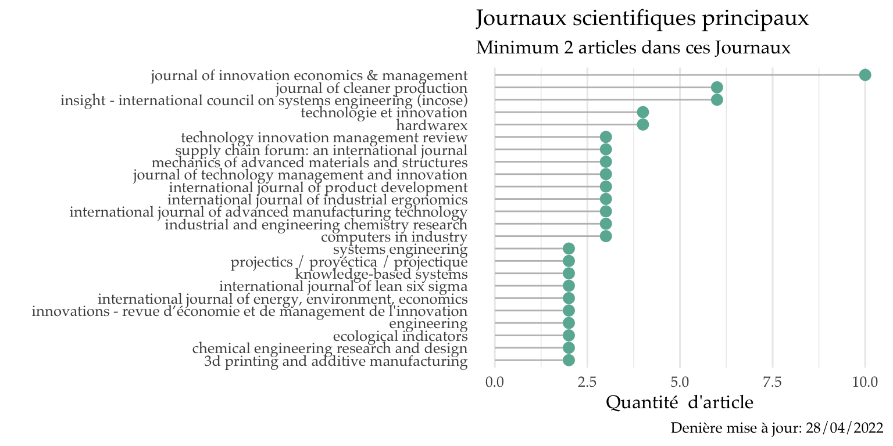
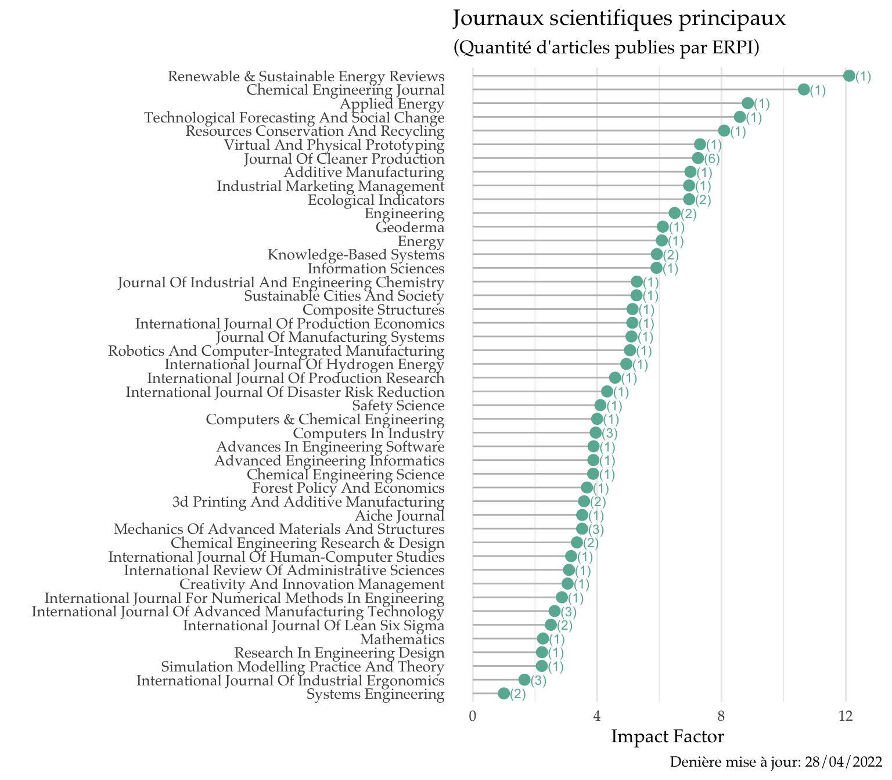
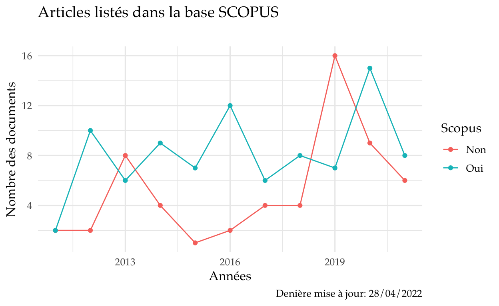
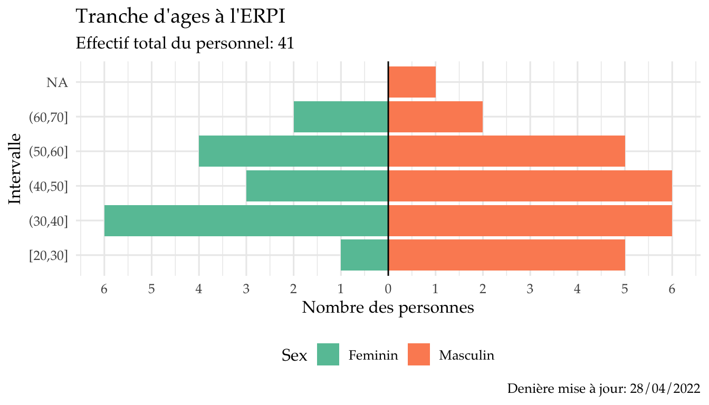
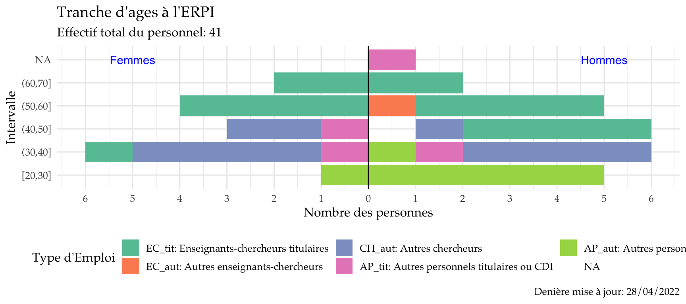
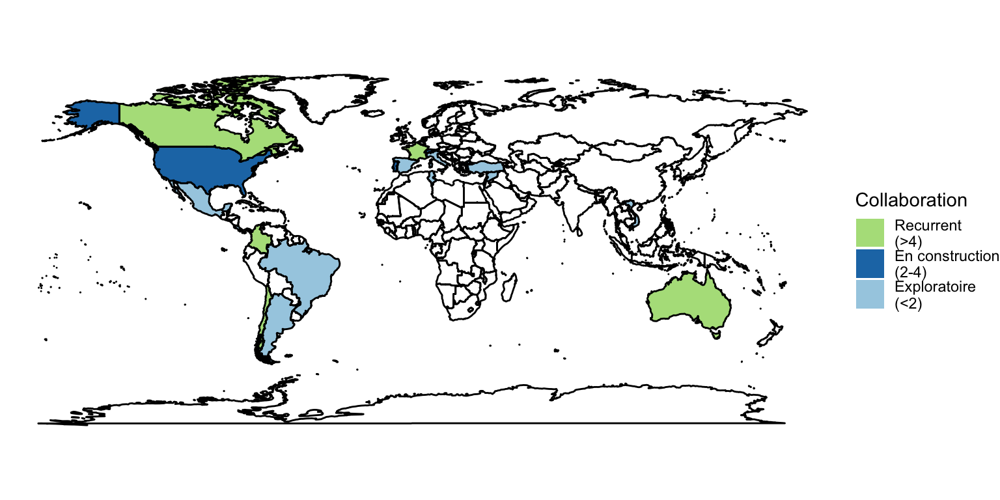

Critères d’evaluation
| Type | Production |
|---|---|
| Journaux / revues | |
| Articles scientifiques | 97 |
| Articles de sythèse / revues bibliographiques | |
| Autres articles (articles publiés dans des revues professionnelles ou techniques, etc) | |
| Ouvrages | |
| Monographies, éditions critiques, traductions | |
| Direction et coordination d’ouvrages scientifiques / édition scientifique | |
| Direction et coordination d’ouvrages scientifiques / édition scientifique en anglais ou dans une autre langue étrangère | |
| Chapitres d’ouvrage | |
| Chapitres d’ouvrages en anglais ou dans une autre langue étrangère | |
| Thèse éditées | 21 |
| Production dans des colloques / congrès, séminaires de recherche | |
| Editions d’actes de colloques / congrès | |
| Articles publiés dans des actes de colloques / congrès | 116 |
| Autres produits présentés dans des colloques / congrès et des séminaires de recherche | |
| Produits et outils informatiques | |
| Logiciels | |
| Base de données | |
| Outils d’aide à la désicion | |
| Cohortes | |
| Développements instrumentaux et méthodologiques | |
| Prototypes et démostrateurs | |
| Plateformes et observatoires | |
| Autres produits propres à une discipline | |
| Créations artistiques théorisées, mises en scènes, films | |
| Activités éditoriales | |
| Participation à des comités éditoriaux (journaux scientifiques, revues, collections, etc) | |
| Direction de collection et de séries | |
| Activités d’évaluation | |
| Evaluation d’articles et d’ouvrages scientifiques (relecture d’articles / reviewing) | |
Workshop ERPI 2019
Competences ERPI par rapport aux reference ministère
Dans le tableau suivant montre les niveau evalué:
Document froms HAL 2016 - 2022
Liste de production scientific: Last update from HAL “28 April, 2022”
Evolution of ERPI’s Scientific production
Articles, Conferences et Thèses. Mise à jour: 28 April, 2022

Journals
Principaux journaux de publication ERPI:

Impact Factor des journaux de publication ERPI:

Impact Factor

Profile des journaux qui sont en SCOPUS:

SCOPUS a une serie de Sous domaine lié à chaque journal. Dans ce wordcloud, une presentation des sous-domaines en tulisant les journaux references Scopus publiés par ERPI dans la periode 2016-2020
Areas majors pour ERPI selon Scopus:
| Scopus Sub-Subject Area | Frequency |
|---|---|
| Industrial and Manufacturing Engineering | 19 |
| Strategy and Management | 11 |
| Renewable Energy, Sustainability and the Environment | 10 |
| Civil and Structural Engineering | 9 |
| Mechanical Engineering | 9 |
| Management of Technology and Innovation | 7 |
| General Environmental Science | 6 |
| Biomedical Engineering | 5 |
| Economics and Econometrics | 4 |
| General Mathematics | 4 |
Scimago

Tranches d’Ages
Membres (Prof, MDF, Admin et PostDoc/Chercheur contractuelle) présents à 2021 à l’ERPI:
- Quantité total des perssones : 41
Voila la liste des perssones à Dec 2021.
Pyramide des ages:

Piramide de profiles:

International Collaborations

On Europe
America